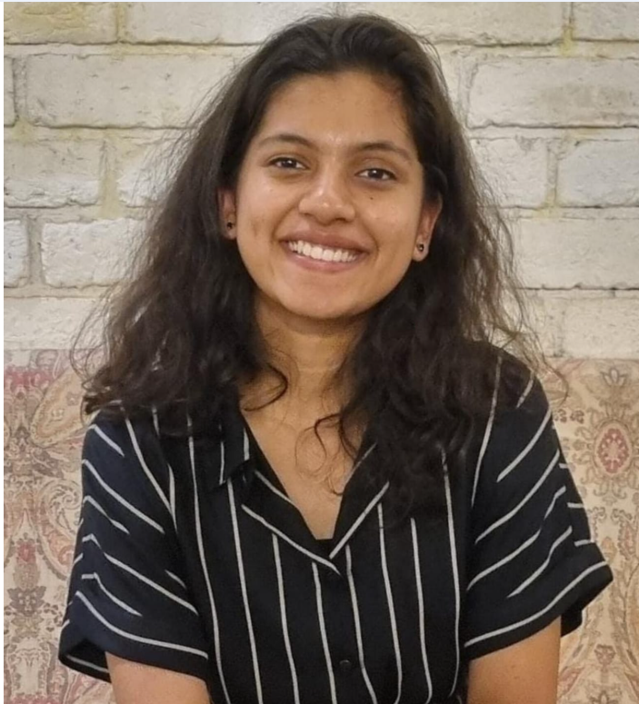

ChEA BLOGS
Anvitaa Goel | JM Financial

Hi! I am Anvitaa, a third-year Chemical Engineering student, pursuing a minor in Management. I am from Delhi.
What was your motivation for the internship and what was the recruitment process like? Why did you chose to do an internship instead of other options, such as projects or bootcamp? How did you prep for this role?
There were several motivating factors for this internship:
-I wanted to explore the intersection of chemical core with finance
-As a result of this, equity research in chemicals aligned perfectly with my interest
I had to give an online interview; it was mostly resume based along with a few basic finance related questions focused on financial ratios and financial statements.
Did you get this internship via apping? If yes, highlight the apping process.
No
Can you explain your role in the internship? What jobs were you expected to perform and what projects were you involved with?
My domain was "Equity Research in Chemicals". I applied the discounted cash flow method to find the inherent value of companies. I analyzed the annual reports to assess relative financial performance. I carried out market research on the fluoropolymers segment.
What were the most exciting aspects of the internship? What were the most challenging aspects?
The most exciting part was picking up something new everyday from someone in the office, while doing some real, concrete work, and not just theory. Initially, travel to the office was a bit challenging. Having said that, commuting did become very convenient with the newly opened Metro Aqualine.
What was the culture like in your office? How did the company treat the interns and what were you provided with?
The company did not have too many interns from a BTech background. In fact, I was one of the youngest people in the office! Everyone took a lot of efforts to educate me in one thing or another, be it related to finance, the corporate world, or life skills in general! Overall, the office culture was incredibly supportive and encouraging.
What were your key learnings from the internship and any tips you would like to give to your juniors?
The internship helped me clearly identify and confirm my interest in the finance sector. I feel one should choose an internship in the 2nd year that helps explore or eliminate a sector. For this reason, I believe that second year internships are more than just resume points. One of the most valuable things I learnt was patience; things don't always work out at first and one may feel stuck; in such situations it is important to just stay optimistic, be patient, trust the process. Things eventually work out!
Contact Details
8860751667